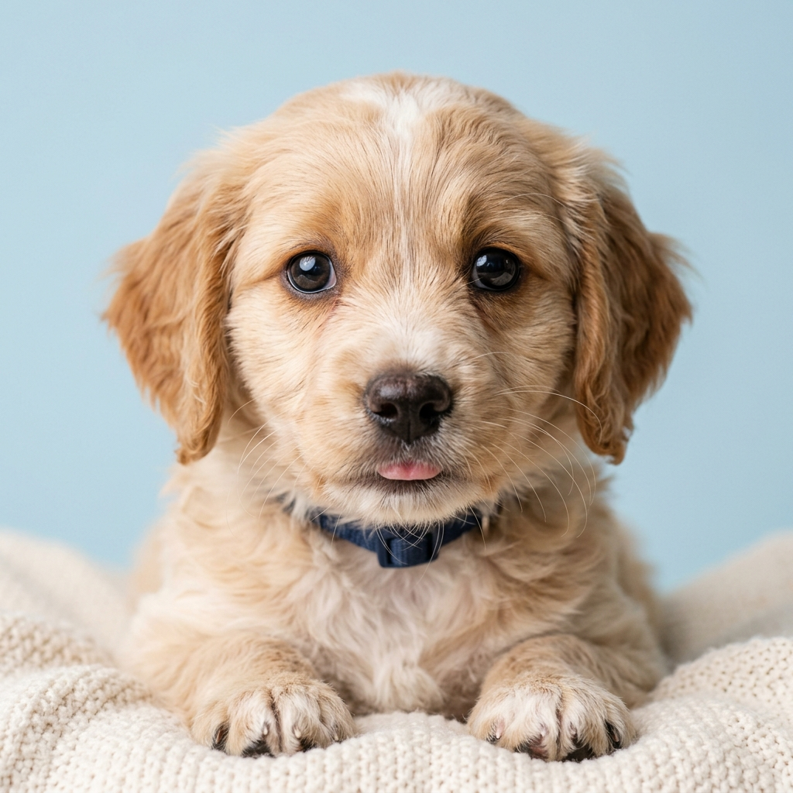
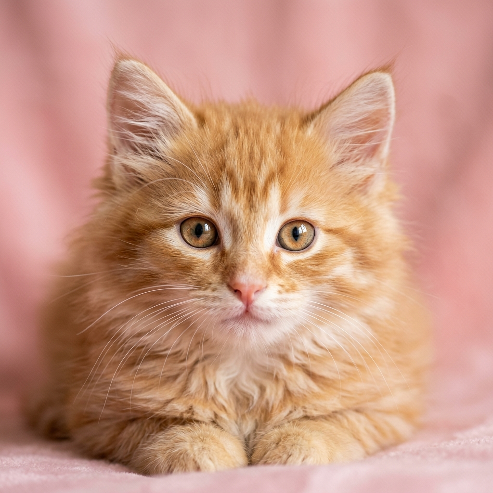

Macho
Max
3 meses | Mestizo
Max es un cachorro enérgico y muy cariñoso. Ideal para familias con niños activos.
Adoptar a Max
Hembra
Luna
1 año | Común Europeo
Tranquila y muy mimosona. Le encanta dormir en lugares cálidos y los mimos en la barbilla.
Adoptar a Luna
Hembra
Kira
2 años | Labrador Mix
Muy obediente y protectora. Se lleva genial con otros perros y adora los paseos largos.
Adoptar a KiraNo hay resultados
Prueba seleccionando otra categoría.